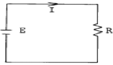
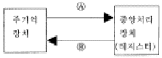
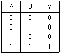
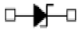
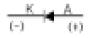
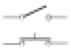
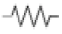
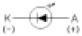
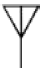
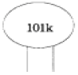

전자캐드기능사 (2005-07-17 기출문제)
1과목: 전기전자공학(대략구분)
1. 저항 R = 3[Ω]과 유도리액턴스 XL = 4[Ω] 이 직렬로 연결된 회로에 e = 100XXXXXXXt[V]인 전압을 가하였다. 이 회로에서 소비되는 전력은 얼마인가?(문제 오류로 XXx 표시된 부분이 아직 복원되지 않았습니다. 내용을 아시는 분들께서는 관리자 메일 또는 오류신고를 통하여 내용 작성 부탁 드립니다. 정답은 1번 입니다.)
- 1. 2[㎾]
- 2. 2[㎾]
- 3. 5[㎾]
- 4. 2[㎾]
(정답률: 74%)

2. 금속의 열전자 방출에 대한 설명이 잘못된 것은?
- 전자방출량은 금속의 종류에 따라 달라진다.
- 일함수가 큰재료는 저온에서 전자방출이 크다.
- 전장의 영향에 따라 전자방출량이 달라진다.
- 금속의 표면 상태에 따라 전자방출량이 달라진다.
(정답률: 67%)
3. 다음 중 통신에 있어서 변조의 필요성에 대하여 잘못 설명된 것은?
- 혼신을 줄일수 있다.
- 설비의 비용을 줄일수 있다.
- 입출력의 크기를 변화 시킬수 있다.
- 원거리 전송이 가능하다.
(정답률: 41%)
4. 전기 저항에서 어떤 도체의 길이를 4배로 하고 단면적을 1/4로 했을 때의 저항은 원래 저항의 몇 배가 되는가?
- 1
- 4
- 8
- 16
(정답률: 69%)
5. 100[V], 60[㎐]의 교류 전압을 가할 때 15[A]의 전류가 흐르는 콘덴서의 정전용량은 약 몇 [㎌] 인가?
- 400[㎌]
- 450[㎌]
- 500[㎌]
- 550[㎌]
(정답률: 32%)
6. 공기중의 비투자율에 가장 근접한 것은 ?
- 6. 33 x 104
- 1
- 9 x 1019
- 4π x 10
-7
(정답률: 64%)
7. 다음 중 이상적인 연산증폭기의 특징이 아닌 것은?
- 출력 임피던스가 무한대이다.
- 입력 임피던스가 무한대이다.
- 대역폭이 무한대이다.
- 전압 이득이 무한대이다.
(정답률: 52%)
8. 플립플롭(flip-flop)의 종류 중 두 입력이 동시에 1일 때 출력이 반전되는 플립플롭(flip-flop)은?
- R-S
- D
- A
- J-K
(정답률: 71%)
9. 다음은 자기현상을 설명한 것이다. 설명이 잘못된 것은?
- 자력선은 N극에서 나와 S극으로 들어간다.
- 같은 극 끼리는 반발력, 다른극 끼리는 흡인력이 작용한다.
- 두 자극 사이에 작용하는 힘은 프레밍의 법칙에 따른다.
- 두 자극 사이에 작용하는 힘은 자극 사이의 거리의 제곱에 반비례한다.
(정답률: 59%)
10. 수정발진기에 대한 설명중 틀린 것은?
- 안정도가 높다.
- 기계식 진동소자이다.
- 수정을 발진자로 이용한다.
- Q값이 낮다.
(정답률: 61%)
11. 주파수가 다른 두 정현파의 실효값이 E1, E2 이다. 이 두 정현파 교류의 합성전압의 실효값은 얼마인가?(문제 오류로 3번 보기가 아직 복원되지 않았습니다. 내용을 아시는 분들께서는 관리자 메일 또는 오류신고를 통하여 내용 작성 부탁 드립니다. 정답은 3번 입니다.)
- E1 + E2
- E1 - E2
- 복원중
- (E1 + E2)/2
(정답률: 77%)
12. 발진회로의 주파수변동 원인과 대책으로 거리가 먼 것은?
- 부하의 변동 - 완충증폭기 사용
- 주위온도 변화 - 항온조 사용
- 부품 특성변화 - 직렬회로를 사용
- 전원 전압변동 - 정전압회로 사용
(정답률: 57%)
13. 그림에서 저항 R의 값이 2[Ω ]일 때 3[A]의 전류가 흐르고 저항값이 4[Ω ] 일때 2[A]의 전류가 흘렀다. 기전력 E 의 값은?

- 6 [V]
- 8 [V]
- 12 [V]
- 48 [V]
(정답률: 45%)
14. 1000[㎑]의 반송파에 10[㎑]의 저주파를 진폭변조 시킬때 상측파대 최고주파수는 몇[㎑]인가 ?
- 1000
- 10⑤
- 1010
- 1015
(정답률: 74%)
15. 증폭기 회로에서 특유의 크로스오버 일그러짐이 있는 것은 몇급 증폭기인가?
- A급
- AB급
- B급
- C급
(정답률: 73%)
2과목: 전자계산기일반(대략구분)
16. 다음 게이트(gate)들 중에서 두 수의 부호 판단에 적당한 것은?(그림 없이 아래 보기 내용만으로 푸는 문제입니다. 오류신고 자제 부탁 드립니다.)
- NAND
- EX-OR
- AND
- OR
(정답률: 56%)
17. 컴퓨터의 기억장치로 부터 명령이나 데이터를 읽을 때 제일 먼저 하는 일은?
- 명령 지정
- 명령 출력
- 어드레스 지정
- 어드레스 인출
(정답률: 56%)
18. 다음 중 주변 장치의 입·출력 방법이 아닌 것은?
- 데이지체인 방법
- 트랩 방법
- 인터럽트 방법
- 폴링 방법
(정답률: 48%)
19. 다음 중 산술 및 논리 연산을 행하는 장치는?
- 어큐뮬레이터(Accumulator)
- 스택 포인터(Stack pointer)
- 프로그램 카운터(Program counter)
- ALU(Arithmetic Logic Unit)
(정답률: 64%)
20. 그림이나 사진 또는 도형을 이미지 형태로 변환하는 입력장치는?
- 광학마크 판독기
- 광학문자 판독기
- 스캐너
- 마우스
(정답률: 84%)
21. 부동 소수점 표현 방식에서 사용되지 않는 것은?
- 부호 비트
- 지수부
- 소수점
- 가수부
(정답률: 39%)
22. 아래 그림은 연산자의 전달기능을 나타낸 것이다. A, B에 알맞은 것은?

- A : 전송(Transport), B : 수신(Recive)
- A : 로드(Load), B : 스토어(Store)
- A : 입력(Input), B : 출력(Output)
- A : 해독(Decoding), B : 실행(Execute)
(정답률: 57%)
23. 마이크로프로세서에서 누산기(Accumulator)의 용도는?
- 명령을 저장
- 명령을 해독
- 명령의 주소를 저장
- 연산 결과를 일시적으로 저장
(정답률: 80%)
24. 10진수 (755)10를 16진수로 변환하면?
- 1F3
- 1F5
- 2F3
- 2F5
(정답률: 57%)
25. 주소지정방식으로 사용되는 것이 아닌 것은?
- 직접 주소지정방식
- 통합 주소지정방식
- 상대 주소지정방식
- 레지스터 주소지정방식
(정답률: 63%)
26. 순서도(flowchart)의 기본형이 아닌 것은?
- 직선형
- 조건형
- 반복형
- 분기형
(정답률: 36%)
27. 다음과 같은 진리표를 불대수로 표현하면?

- Y=AB'
- Y=A'B
- Y=A+B
- Y=AB
(정답률: 67%)
28. 국제 표준화 기구의 규격 기호는?
- KS
- DIN
- ISO
- ANSI
(정답률: 85%)
29. 인쇄회로기판(PCB)의 설계 시 발열 부품에 대한 대책으로 올바르지 못한 것은?
- 일반적으로 내열 온도는 85℃ 이하에서 사용하는 것이 바람직하다.
- 실장 면적은 부품을 PCB에 밀착하여 배치하는 경우에 납땜 시 온도의 영향을 작게 설계하는 것이 요구된다.
- 발열 부품은 한 곳에 집중 배치하여, 부분적 영향을 받도록 하는 것이 유리하다.
- 공기의 흐름을 파악하여, 열에 약한 부품은 공기의 유입 부분에, 열에 강한 부품은 출구 쪽에 배치한다.
(정답률: 75%)
30. 출력 장치인 펜 플로터 중 전기, 전자, 통신 분야에서 배선도, 접속도 등의 선도를 그리는 경우에 주로 사용되는 것은?
- 드럼(drum)형
- 플레이트 베드(plate bed)형
- X-Y형
- 잉크젯(Inkjet)형
(정답률: 62%)
3과목: 전자제도(CAD) 이론(대략구분)
31. 다음 기호의 명칭으로 옳은 것은?

- SCR
- Triac
- UJT
- Zener Diode
(정답률: 84%)
32. 소자들의 실제 모양을 직선으로 연결하여 접속 관계를 명확히 나타내며 제작자나 보수자들에게 많이 사용되는 도면은?
- 배선도
- 조립도
- 블록선도
- 계통도
(정답률: 47%)
33. 도면을 내용에 따라 분류했을 때 여러 개의 전자 제품이 상호 접속된 상태를 나타내는 도면은?
- 부품도
- 공정도
- 부분조립도
- 전자회로도
(정답률: 62%)
34. CAD 시스템을 도입하는 가장 큰 목적을 나타낸 것 중 옳지 않은 것은?
- 도면 작성의 자동화
- 작업시간 단축
- 효율적 관리
- 복잡한 명령과 실행
(정답률: 77%)
35. 컴퓨터 제도의 특징을 나열하였다. 적합하지 못한 것은?
- 직선과 곡선의 처리, 도형과 그림의 이동, 회전 등이 자유로우며, 도면의 일부분 또은 전체의 축소, 확대가 용이하다.
- 2차원의 표현은 자유롭지만 3차원 도형과 숨은 선의 표시가 곤란하다.
- 자주 쓰는 도형은 매크로를 사용하여 여러번 재생하여 사용할 수 있다.
- 작성된 도면의 정보를 기계에 직접 적용시킬 수 있다.
(정답률: 68%)
36. 한국산업규격(KS)의 전자제도 통칙에 대한 설명으로 옳지 않은 것은?
- 기하학적 도법에 기초를 둔 것으로 기기 구조의 표시 방법은 기계제도와 다르다.
- 전자기기나 제품의 제도에는 특수한 방법이나 기호 등을 사용한다.
- 설계된 기기의 모양이나 치수 또는 시설의 배치 회로의 결선 등을 도면으로 정확하게 표시해야 한다.
- 전기용 신호(KSC0102)에 규정된 사용 방법을 따르며, 도면은 반드시 정해진 규격에 따라서 그려야 한다.
(정답률: 45%)
37. 다음 전자부품 기호 중 발광 다이오드 기호로 옳은 것은?




(정답률: 83%)
38. 반도체 소자의 형명 중 "2SC1815Y"는 어떤 소자인가?
- 다이오드
- 발광다이오드
- 콘덴서
- 트랜지스터
(정답률: 78%)
39. 5색으로 표시된 고정 저항의 색에 대한 설명으로 옳은 것은?
- 첫 번째 색-유효숫자
- 세 번째 색-10의 배수(곱수)
- 네 번째 색-허용오차
- 다섯 번째 색-정격전력[W]
(정답률: 62%)
40. 다음 중 전자 CAD를 이용한 설계의 효율성으로 가장 적절하지 않은 것은?
- 손으로 그리므로 간소화하기 쉽다.
- 제품의 개발에 필요한 시간을 줄이고, 공정을 간소화 할 수 있어 원가가 절감된다.
- 설계 시 변경과 시간을 단축할 수 있어 생산성이 향상된다.
- 데이터의 보관이 용이하다.
(정답률: 77%)
41. 고밀도의 배선이나 차폐가 필요한 경우에 사용하는 적층 형태의 PCB는?
- 단면 PCB
- 양면 PCB
- 다층면 PCB
- 바이폴라 PCB
(정답률: 63%)
42. X-Y Plotter 등의 처리 속도가 느린 주변 기기와 컴퓨터 시스템의 중간에서 시스템의 이용 효율을 높이는 것은?
- 중간 증폭
- 데이터 버퍼
- 마우스
- 연산 장치
(정답률: 72%)
43. 제도 용지에 연필로 직접 그린 그림이나 컴퓨터로 작성한 최초의 도면을 무엇이라 하는가?
- 원도
- 트레이스도
- 복사도
- 축로도
(정답률: 80%)
44. 전자 부품은 크게 능동 부품(active component)과 수동 부품(passive component)으로 나눌 수 있는데 다음 중 능동 부품이 아닌 것은?
- 다이오드(diode)
- 트랜지스터(TR)
- 집적 회로(IC)
- 저항기(R)
(정답률: 72%)
45. 다음 전자 부품 중에서 에너지의 공급을 받아 신호의 증폭, 발진, 변환 등의 능동적 기능을 수행하는 부품이 아닌 것은?
- 집적회로
- 트렌지스터
- 다이오드
- 콘덴서
(정답률: 60%)
46. 그림과 같은 전자 부품 기호의 명칭은?
- 트랜지스터(TR)
- 전기장 효과 트랜지스터(FET)
- 다이오드(Diode)
- 다이액(DIAC)
(정답률: 80%)
47. 도면에서 표제란(Title panel)의 위치로 옳은 것은?
- 오른쪽 아래
- 오른쪽 위
- 왼쪽 아래
- 왼쪽 위
(정답률: 80%)
48. 다음 전기용 기호는 무엇을 나타낸 것인가?

- 스위치
- 퓨즈
- 유도기
- 안테나
(정답률: 79%)
49. 인쇄 기판의 제조 공법으로 부적합한 것은?
- 정전 부식법
- 사진 부식법
- 실크 스크린법
- 오프셋 인쇄법
(정답률: 56%)
50. 전자 CAD 프로그램에서 하나의 부품 기호를 불러왔을 때 표시되는 것이 아닌 것은?
- 부품의 심벌
- 부품의 참조
- 부품의 값
- 부품의 크기
(정답률: 54%)
51. 인쇄 회로 기판(PCB)의 특징이 아닌 것은?
- 소형 경량화에 기여한다.
- 제품의 균일성과 신뢰성이 높다.
- 제조의 표준화와 자동화를 기할 수 있다.
- 소량 다품종 생산인 경우에는 제조 단가가 낮아진다.
(정답률: 80%)
52. KS의 부문별 기호에서 기본적인 내용에 관계되는 분류기호는?
- KS A
- KS B
- KS C
- KS D
(정답률: 68%)
53. 전자 CAD 프로그램에서의 편집 기능 명령과 거리가 먼 것은?
- 이동
- 복사
- 붙이기
- 호출
(정답률: 81%)
54. 도면을 실물의 치수보다 작게 그리는 척도는?
- 실척
- 배척
- 축척
- NS
(정답률: 88%)
55. 축척 1:25의 도면에서 도면 상 길이가 2mm 일 때 실제 길이는?
- 1. 25mm
- 5mm
- 12. 5mm
- 50mm
(정답률: 71%)
56. 인쇄회로 기판의 고밀도화를 촉진하는 요인이 아닌 것은?
- via 홀의 소형화
- 인쇄회로기판의 다층화
- 부품의 SMT화
- 전자회로의 단순화
(정답률: 55%)
57. 다음 그림은 세라믹 콘덴서이다. 용량 값은?

- 0. 01[㎌]
- 10[㎊]
- 1000[㎊]
- 0. 0001[㎌]
(정답률: 64%)
58. 인쇄회로기판(PCB)을 제조 할 때 사용되는 제조 공정이 아닌 것은?
- 사진 부식법
- 실크 스크린법
- 오프셋 인쇄법
- 대역 용융법
(정답률: 66%)
59. PCB 도면을 그래픽 출력장치로 인쇄할 경우 프린트 기판에 부품 정보를 나타내는 도면은?
- component side pattern
- top silk screen
- solder side pattern
- solder mask
(정답률: 72%)
60. PCB의 약자는?
- Printed Component Board
- Pattern Circuit Board
- Printed Circuit Board
- Pattern Component Board
(정답률: 56%)
e = Ri + XL(di/dt)
di/dt = (e - Ri)/XL
i = ∫(e - Ri)/XL dt = (1/XL) ∫(e - Ri) dt
전력 P는 다음과 같이 구할 수 있다.
P = Ri^2 = R(∫(e - Ri)/XL dt)^2
여기에 R = 3[Ω], XL = 4[Ω], e = 100XXXXXXXt[V]를 대입하면,
P = 3(∫(100XXXXXXXt - 3(1/XL) ∫(100XXXXXXXt) dt)/XL)^2
= 3(∫(100XXXXXXXt - 3(1/XL) (1/2)(100XXXXXXXt)^2) dt/XL)^2
= 3(∫(100XXXXXXXt - 6.25XXXXXXXt^2) dt/4)^2
= 3(1/8)(50XXXXXXXt^2 - 6.25XXXXXXXt^3)^2
= 3(1/64)(2500XXXXXXXt^4 - 625XXXXXXXt^5)
따라서, P는 2[㎾]이다.